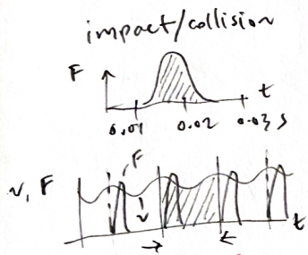
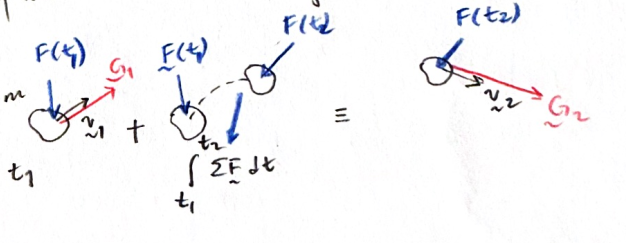
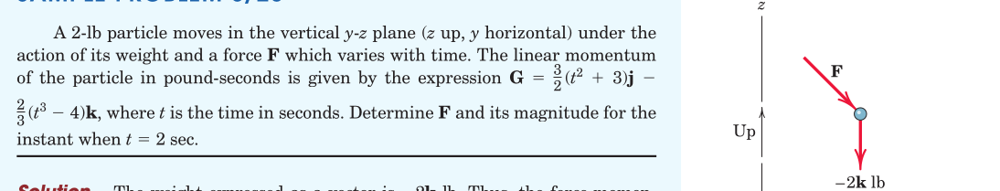
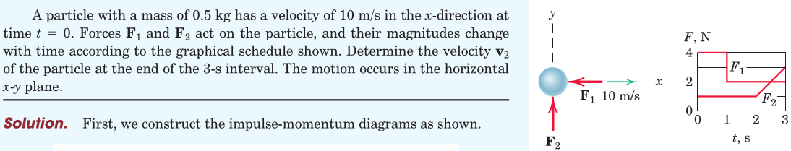
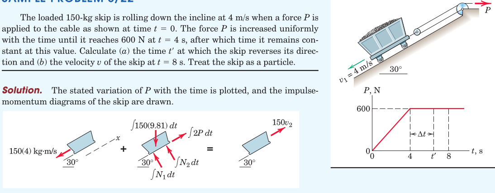
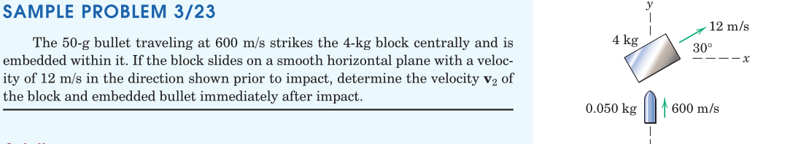

kinetics of masses/impulse and linear momentum
Particle Kinetics
2025-11-11
Table of Contents
1. Impulse
- Our study of work and energy allowed us to solve problems in dynamics by integrating the equation of motion over the path.
- This way, we were able to determine velocities without the need for integrating accelerations.
- Now we consider integrating the equation of motion in time.
1.1. time integral of forces
The notion of impulse and impact may be related. \[ \int_{t_1}^{t_2} \boldsymbol{F} dt \]
1.2. temporal nature of force

The impulse period \(t_1-t_2\) may be very brief as in impact, or the force application may be occurring over repeated (or cyclic) periods, i.e. periodic excitation.
2. Linear Momentum
The product of mass and velocity is called the linear momentum, \(\boldsymbol{G}\) where \[ \boldsymbol{G} = m \boldsymbol{v} \]
2.1. equation of motion (revisited)
The equation of motion (for a single mass) \[ \sum_i \boldsymbol{F}_i = m \dot{\boldsymbol{v}} \] The right hand side can be generalized for variable mass as \[ \sum_i \boldsymbol{F}_i = \frac{d}{dt}(m \boldsymbol{v}) \]
2.1.1. balance of linear momentum principle
The equation of motion reads \[ \sum_i \boldsymbol{F}_i = \dot{\boldsymbol{G}} \]
The resultant unbalanced force acting on the mass equals its time rate of change of linear momentum.
2.1.2. integrating the equation of motion in time
The balance of linear momentum can be converted into a differential expression \[ \sum_i \boldsymbol{F}_i dt = d \boldsymbol{G} \]
form one
Integrating the differential expression we get
\[ \int_{t_1}^{t_2} \sum_i \boldsymbol{F}_i dt = \int_{G_1}^{G_2} d (\boldsymbol{G}) = \boldsymbol{G}_2 - \boldsymbol{G}_1 \]
form two
manipulating the equation by moving terms around, we get
\[ \boldsymbol{G}_1 + \int_{t_1}^{t_2} \sum_i \boldsymbol{F}_i dt = \boldsymbol{G}_2 \]
2.1.3. impulse-momentum diagram

The impulse-momentum equation provides as many terms as the rank of model space
2.1.4. conservation of momentum
Here we state that
if the resultant of forces in a particular direction (or as a whole) remains zero during a period, then the change in linear momentum within that period and particular direction (or as a whole) will be zero
3. Examples





4. Review
From Hibbeler, Engineering Mechanics: Dynamics: Chapter 15: 6, 14, 18, 22, 28, 33, 39, 42, 43